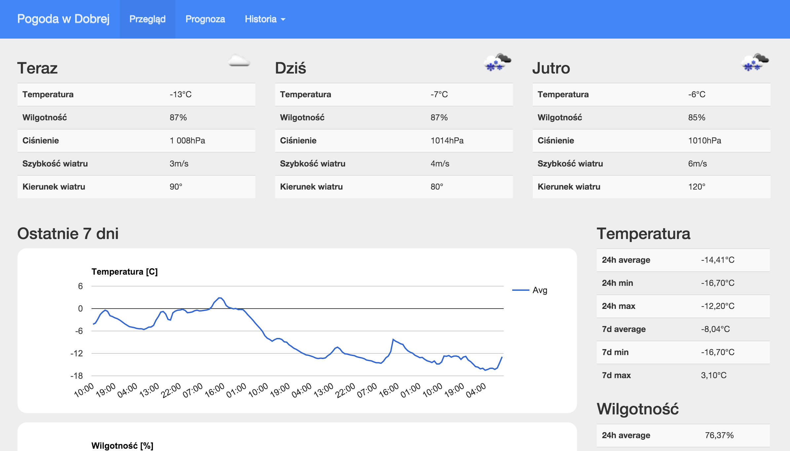

Overview
Raspberry Pi WeatherStation is a weather station utilizing both hardware sensors for collecting temperature, humidity and atmospheric pressure and external weather data providers (OpenWeatherMap) to get other weather data and forecast.
Hardware
To setup this project you will need following hardware
- Raspberry Pi with network interface (B, B+, Raspberry Pi 2 B)
- DHT22 temperature and humidity sensor
- BMP180/BMP085 barometer
Exact list of required hardware and schematics are available in README.md
Software
Used software
- Raspbian Linux operating system
- Python
- PHP
- SQLite3
- pigpio library
Exact list of required software and installation instructions are available in README.md
